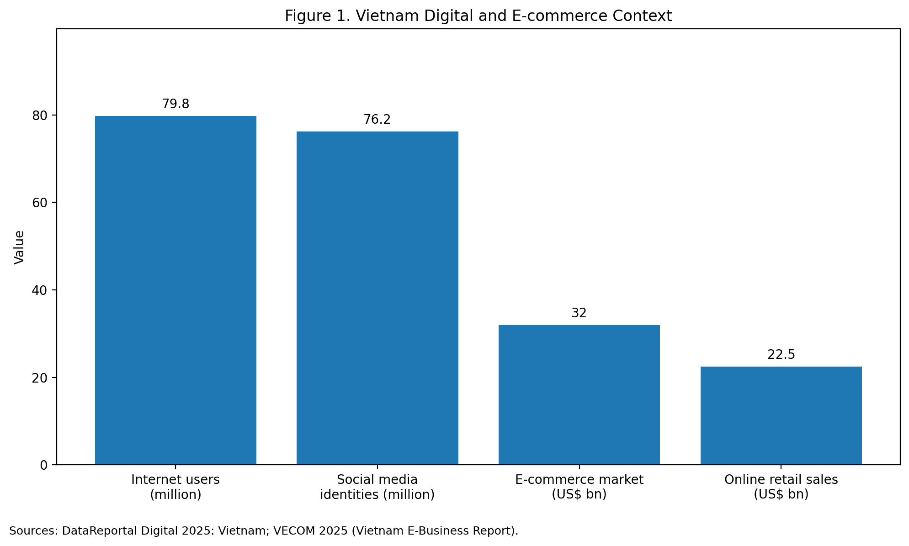
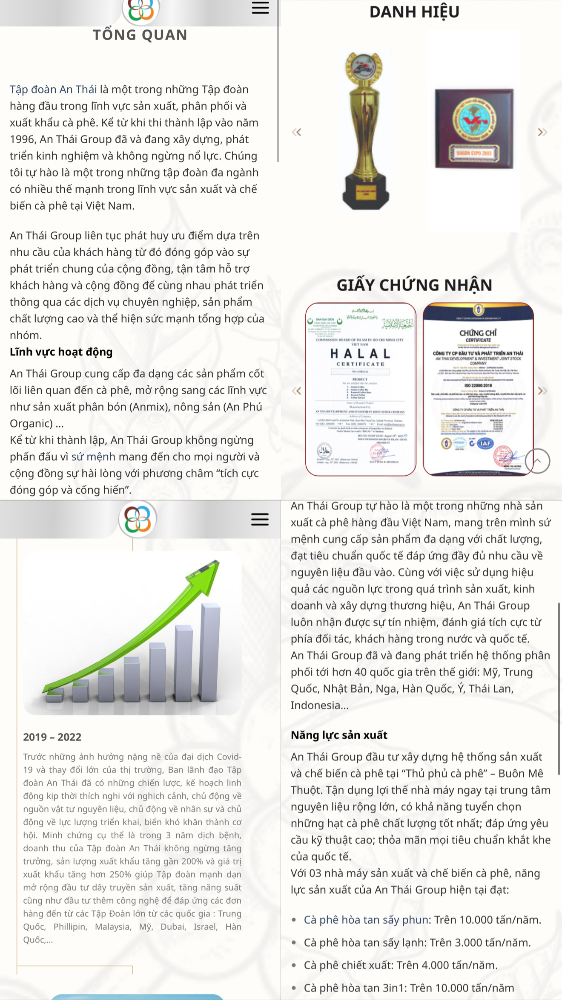

The Ladder of Engagement
The document’s diagnosis that An Thai is strongest at awareness and weakest at advocacy and co-creation.
Read chapter →An Thai is a Vietnamese coffee company with a credible manufacturing base, export capability, and a broad product portfolio.
Public information on the company’s official channels indicates that An Thai was founded in 1996, exports to more than 30 countries, and promotes multiple certifications such as ISO, HACCP, Halal, BRC, Kosher, and SNI. The company’s official “About Us” content also highlights annual production capacities across spray-dried instant coffee, freeze-dried instant coffee, extracted coffee liquid, and 3-in-1 coffee mix, while LinkedIn lists the business as privately held with 51–200 employees. These signals matter because they give the brand a strong trust base, but they do not automatically guarantee digital marketing effectiveness.
This report argues that An Thai’s main digital issue in Vietnam is not lack of credibility, but lack of digital conversion structure. Vietnam is already a highly digital market: DataReportal reports 79.8 million internet users at the start of 2025, while VECOM estimates that Vietnam’s e-commerce market reached US$32 billion in 2024, including US$22.5 billion in online retail sales. In such a context, a company website and social platforms cannot function only as information channels; they must also support engagement, action, and conversion.
| Indicator | Publicly available evidence | Why it matters |
|---|---|---|
| Founded | 1996 | Long brand heritage and trust potential |
| Company size | 51–200 employees | Recommendations should remain realistic |
| Spray-dried instant coffee capacity | 5,000 tons/year | Strong manufacturing story |
| Freeze-dried instant coffee capacity | 1,000 tons/year | Premium product potential |
| Extracted coffee liquid capacity | 2,000 tons/year | B2B and ingredient opportunities |
| 3-in-1 coffee mix capacity | 5,000 tons/year | Strong mass-market relevance |
| Export footprint | 30+ countries | International credibility |
| Certifications | ISO, HACCP, Halal, BRC, Kosher, SNI | Trust and quality cues |
| Vietnam internet users | 79.8 million | Digital channels are commercially central |
| Vietnam social media identities | 76.2 million | Social media is a core reach environment |
| Vietnam e-commerce market | US$32 billion | Strong online commercial opportunity |
| Vietnam online retail sales | US$22.5 billion | Conversion capability matters |
Public business and market context suggests that An Thai has strong credibility assets, but Vietnam’s digital environment requires stronger engagement and conversion mechanisms.


The website is organised around the four report chapters in the document: the ladder of engagement, the evaluation of Facebook using RACE, the AnTháiCafé website checklist, and the trend analysis of social commerce.
The document’s diagnosis that An Thai is strongest at awareness and weakest at advocacy and co-creation.
Read chapter →The document’s Facebook evaluation using Reach, Act, Convert, and Engage.
Read chapter →The AnTháiCafé audit showing stronger trust signals than conversion clarity.
Read chapter →The social-commerce case for An Thai built around the document’s “discover → ask → buy → return” path.
Read chapter →An Thai already possesses many of the assets that brands usually need to build from scratch: trust, product depth, production capability, and export credibility. The company’s digital problem is therefore not legitimacy, but architecture.
Across the four sections, the same diagnosis emerges: An Thai is stronger at informing than at converting, and stronger at showing credibility than at structuring participation. The most important actions for management are to move audiences higher up the engagement ladder, make Facebook work as a relationship and service platform, improve website conversion clarity, and use social commerce as the most realistic growth trend in Vietnam.